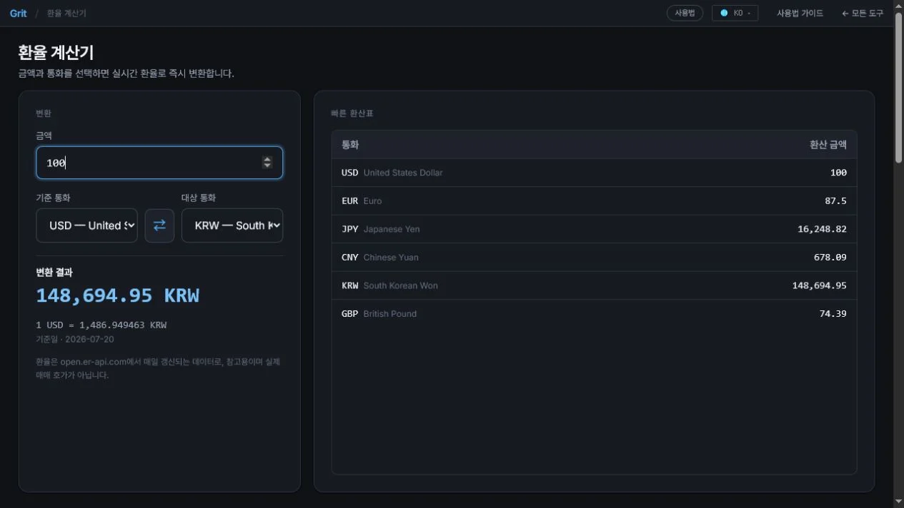

환율 계산기 사용법 — 실시간 환율로 환전 금액 계산
해외 쇼핑, 출장 경비, 송금 예산을 계획할 때 환전 금액을 빠르게 확인하고 싶을 때가 있습니다. 이 계산기는 달러·유로·엔·원 등 주요 통화를 ECB 기준 환율로 즉시 환산합니다. 통화 코드만 서버로 전달되며, 입력 금액은 브라우저에서만 처리됩니다.
이런 분께 필요해요
- 해외 직구·쇼핑 금액을 원화로 환산해 예산을 잡을 때
- 출장·여행 전 환전 금액을 미리 계산할 때
- 해외 송금 예상 금액을 빠르게 확인할 때
- 달러·엔·유로 등 여러 통화를 반복해서 비교할 때
환율 계산 단계
- 보내는 통화·받는 통화 선택변환할 출발 통화(예:
KRW)와 도착 통화(예:USD)를 선택합니다. - 금액 입력변환하려는 금액을 입력합니다. 숫자를 입력하면 환산 결과가 즉시 반영됩니다.
- 환산 결과 확인도착 통화의 환산 금액과 현재 적용된 환율이 함께 표시됩니다.
- 통화 교체(선택)방향 교체 버튼을 누르면 출발·도착 통화가 뒤바뀌어 반대 방향 환산이 가능합니다.
환율 데이터 출처 — ECB · frankfurter.app
이 계산기는 유럽중앙은행(ECB) 기준 환율을 frankfurter.app API를 통해 불러옵니다. ECB 기준 환율은 외환 시장의 중간 환율(mid-market rate)로, 매매 차이(스프레드)가 포함되지 않은 참고 환율입니다.
서버로 전송되는 정보는 통화 코드(예: USD, KRW)뿐입니다. 입력 금액은 서버로 보내지 않고 브라우저 안에서만 계산됩니다.
실제 은행 환율과 차이가 있을 수 있습니다
은행·환전소에서 적용하는 환율은 ECB 기준 환율에 스프레드(매매 마진)가 더해진 값입니다. 즉, 실제 환전할 때는 계산 결과보다 약간 불리한 환율이 적용될 수 있습니다.
- 매매 기준율 — 은행 간 거래 기준, ECB 중간 환율에 가까움.
- 현찰 살 때·팔 때 환율 — 창구 환전 시 스프레드가 1~3% 내외 추가됨.
- 송금 환율 — 은행 및 핀테크 서비스에 따라 별도 수수료 구조.
이 계산기 결과는 대략적인 금액을 파악하는 참고용으로 활용하고, 실제 환전 전에는 해당 금융기관에서 적용 환율을 확인하세요.
자주 묻는 질문
환율 데이터는 어디서 가져오나요?
유럽중앙은행(ECB) 기준 환율을 frankfurter.app API로 불러옵니다. 서버에 전달되는 정보는 통화 코드뿐이며, 입력 금액은 브라우저에서만 처리됩니다.
환율이 얼마나 자주 갱신되나요?
ECB 기준 환율은 유럽 영업일 기준 하루 1회 갱신됩니다. 실시간 틱 단위 환율이 필요한 경우는 해당 금융기관이나 전문 환전 서비스를 이용하세요.
실제 은행 환율과 다를 수 있나요?
네. 이 계산기는 ECB 기준 중간 환율을 사용합니다. 실제 환전 시에는 스프레드(매매 차이)가 붙으므로 계산 결과와 다를 수 있습니다. 결과는 참고용으로 활용하세요.
인터넷 없이도 사용할 수 있나요?
환율 데이터를 불러오려면 인터넷 연결이 필요합니다. 오프라인 상태에서는 이전에 캐시된 환율이 표시되거나 오류가 나타날 수 있습니다.
어떤 통화를 지원하나요?
USD·EUR·JPY·KRW·GBP·CNY·CAD·AUD·CHF·HKD 등 ECB가 공표하는 주요 통화 30종 이상을 지원합니다. 지원 목록은 도구 내 선택 드롭다운에서 확인할 수 있습니다.
환율 변환 결과 확인하는 법

- 금액 100과 기준 통화 USD, 대상 통화 KRW를 선택합니다.
- 큰 파란 숫자에서 원화 환산 결과와 적용 환율을 확인합니다.
- 오른쪽 빠른 환산표로 같은 100달러의 주요 통화 환산값을 비교합니다.